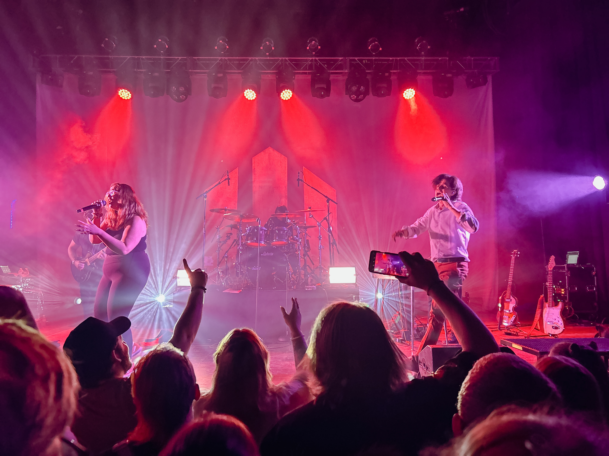
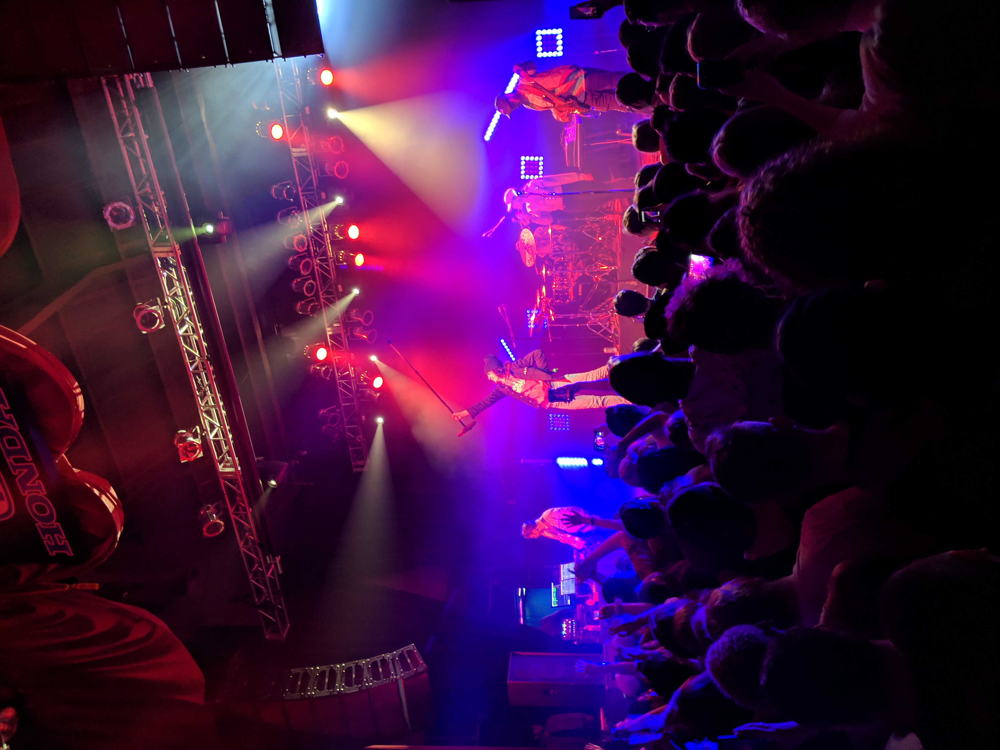

Day 11: Watsky in Salt Lake City
by Aaron Crowder on in Concerts

Watsky - 2023
Last night I had the chance to go see Watsky play at The Depot here in Salt Lake City. It was my second time seeing him in concert, but both where at the same venue. Today I’ve been reflecting on the differences in my experience between both shows.
The last concert was back in March of 2019. It was about a year before the covid pandemic. It was right after “Complaint” (the first album in the trilogy he just completed) came out. My favorite track from that album is “Welcome to the Family” but it wasn’t played. The energy at the show was good, but I was definitely disappointed to not hear that song.

Watsky - 2019
However, last night he DID play it. Additionally in comparison, the energy last night was surreal. Both the crowd and the band played off each other so well. The set started with “Tiny Glowing Screens, Pt 2” and reminded me of Watsky’s start in beat poetry.
I usually struggle with concerts because of sensory overload. However last night I didn’t struggle at all. I’ve heard people talk about experiences at concerts before in a way that almost seems spiritual. I never understood it, but after last night I think I do.
All in all, I think last night was an excellent start to concert season.